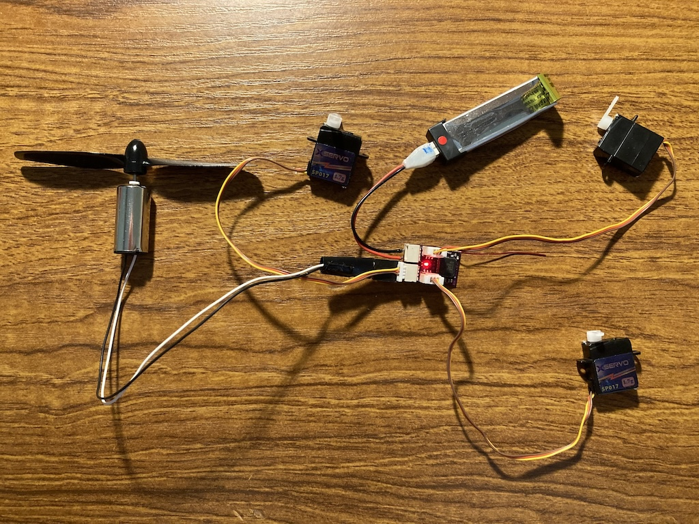
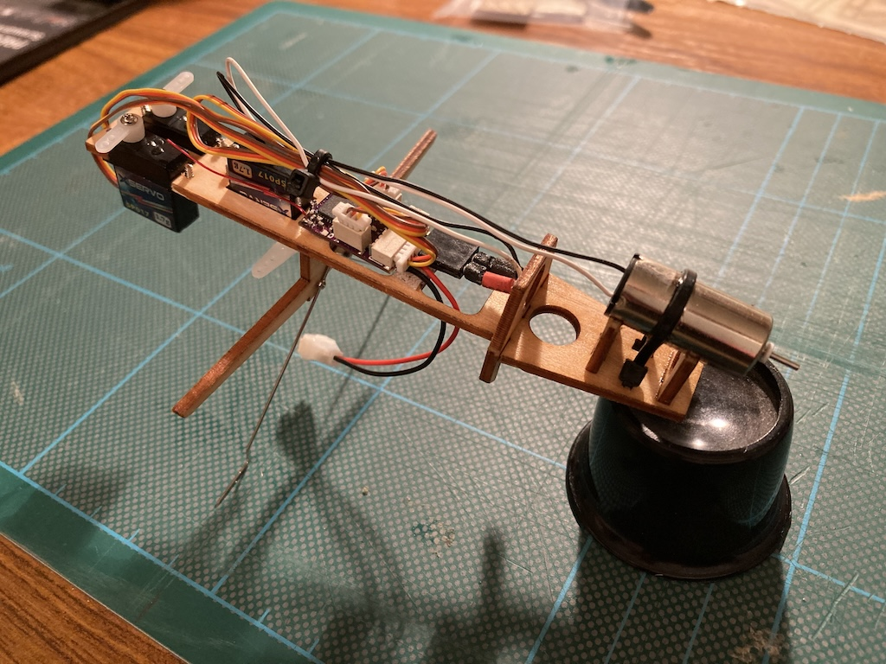
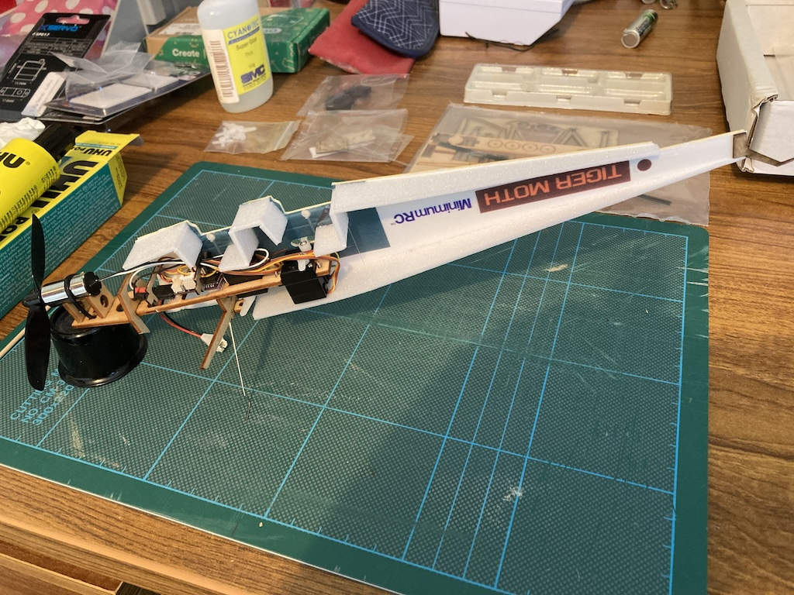
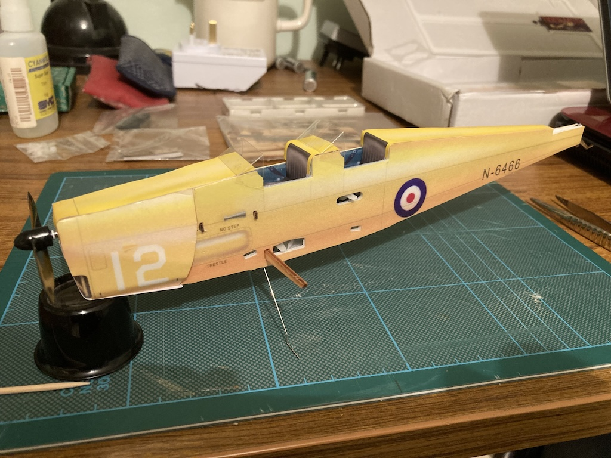
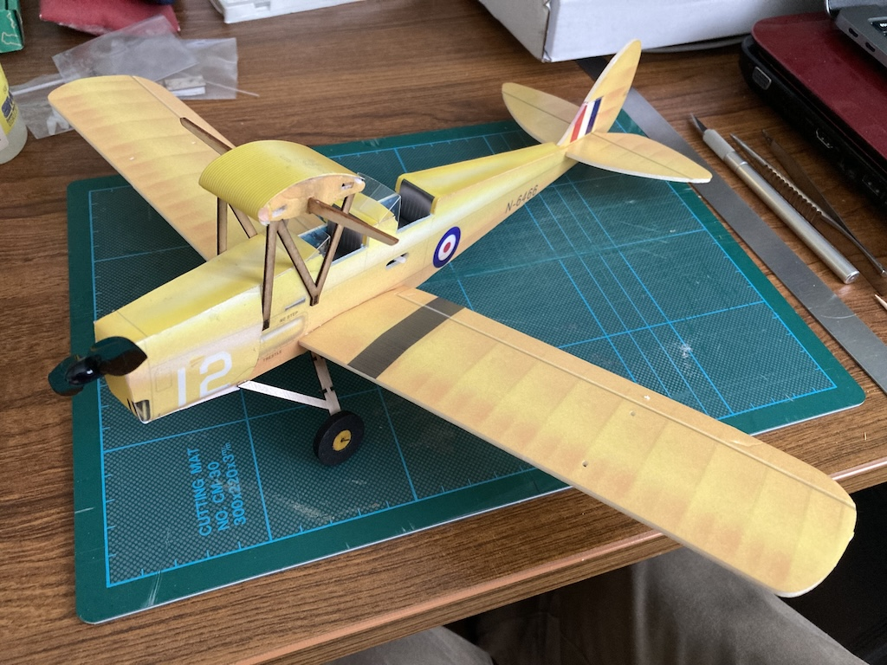
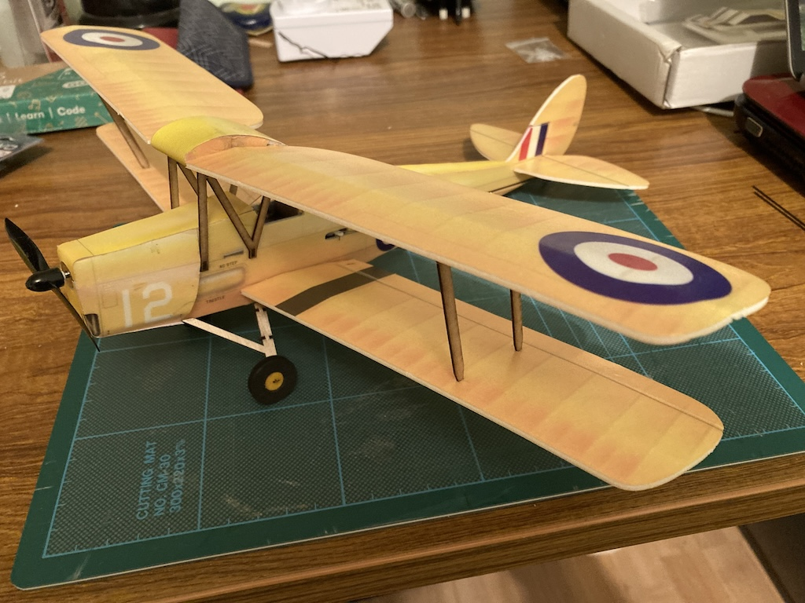

I've been a 'sleeping' member of the Sussex Radio Flying Club since before we downsized, since I'd taken on too much and something had to go, if only temporarily. Time still seems to be tight, but before Christmas 2023 I thought I might be able to ease myself back in by going along to the indoor flying sessions organised by the club. The only problem was, I didn't have a suitable model.
So I started searching the internet and came across a company called BanGood, which seems to be a trader based in Hong Kong. They were advertising "MinimumRC Tigermoth DH-82A Micro Scale 360mm Wingspan KT Foam RC Airplane Biplane KIT+Motor", which looked promising, since, before my 'sleep' I had started building a 50" wingspan Tiger Moth from plan. This kit came with a motor and there was a link to a collection of a receiver and three servos.
So I ordered both the kit and the receiver/servos on 6th November, both arriving on the 17th. I then bought a battery and connector from SMC in Worthing.
The kit contained:
- Laser cut 2mm ply components for the main frame
- 1mm laser cut ply for the struts and control horns
- 2mm foam fuselage panels, wings and tailplane
- Undercarriage wire and tyres
- 1020 brushed motor and propeller
- Self-adhesive stickers to cover most of the bare foam parts
- Carbon push rods and wire clips for the servo to control horn linkages
The receiver and servos that I bought were described as: 'AEORC 3PCS Micro 1.7g Anolog Servo With RX14 Mini 4CH Receiver Integrated 5A/1S Brushed ESC for Micro Indoor Airplane Support S-FHSS DSMX/2 Frsky D16 FlySky AFHDS 2A - for Spektrum DSMX/2'.
The assembly instructions could be downloaded from either the BangBang web page or the MinimumRC site in pdf form. It contained few words, but plenty of photos showing each stage of the construction.
Test Binding
Although the kit was essentially my Christmas present, I wanted to check that the receiver and servos worked and that, in particular, my Spektrum transmitter would bind with the receiver. So, towards the end of November I soldered the motor and battery connections. Actually, I used some strip-board connectors to make a plug and socket for the motor.
I had to set the ‘modulation type’ in the TM-MICRO profile on my transmitter to ‘DSM2 only’ in order to get the DX6i transmitter to bind to the AEO RX144 receiver. But then it worked, although I need to bind the transmitter and receiver every time that I turn them on.
Frame
The laser cut ply components were attached to the sheet by very small uncut spots, which could be easily cut with a sharp blade. The parts fitted together well and dabbing a little thin CA on each joint fixed them together.
The photo shows the assembled main frame with the undercarriage wire fitted, along with the motor, receiver and three servos. The tie-wraps (for the motor and the wiring) were supplied in the kit. Some CA also helped secure the motor.
Fuselage Panels
The coloured foam panels had a very thin plastic layer on each side and were attached to the frame and to each other using POR glue. Aligning the side fuselage panels was a little uncertain, although the lower wing spar did pass through a slit in the panel. Rather than use the POR in its 'contact' mode, I assembled the parts while the glue was still wet, so that I could manoeuvre them into place. Also, I found that using the end of a cocktail stick was useful to apply glue in some parts.
As can be seen from the photos, some of the plain panels were scored and had to be bent before fitting and the coloured engine cowl pieces also needed to be shaped. Coloured stickers were then applied to the fuselage top and front. These stickers included the seat covers and instrument panels.
The only deviation from the instructions that I made was the fitting of the propeller. It was a very tight fit, so I pushed it on to the motor spindle while I could still access the rear of the motor. This meant that I had to cut the front sticker, which just had a hole to fit over the motor spindle.
 Tailplane, Fin and Wings
Assembling the upper wing support and fuel tank was probably the most difficult part of the build. Although the supports located over ply sections joining the two sides of the fuselage, getting all the parts square and fitting the foam over the curved tank took some manipulation.
Fitting the tailplane and fin was the first introduction to the hinging of the control surfaces. The hinges are, in fact, just squashed lines in the foam. The instructions suggested that you should use the end of a screwdriver to score through the 'half-cut' lines for the rudder and elevator. Luckily I tried this on a scrap pice of foam, since the screwdriver end simply ripped the foam. Consequently I used the edge of a steel rule to crush the foam on each side. Then I 'worked' the control surface up and down until it became sufficiently flexible.
When fitting the tailplane I had to pack one side very slightly with a sliver of foam so as to get the tailplane to sit horizontally. The fuselage sides were clearly very slightly mis-aligned. The other problem that I had was with one of the ailerons. One end started to come away from the rest of the wing when bending it, so I applied a small amount of glue. Since the POR glue is flexible I'm hoping that this will still allow the aileron to move.
All four wings also had to be 'curved' by again crushing the foam, but this time only on the underside. The thin ply outboard wing stays slotted into the lower wing, but there was then just a faint mark on the underside of the upper wing. Getting the stays to remain in place while holding them until the glue set was quite tricky.
Control Linkages
The kit was also supplied with wire clips to connect to the servos and control horns, and a length of transparent shrink-wrap tubing to connect the clips to the carbon rod or to each other (the rods were only used to reach the tail). I adjusted the length of each linkage so as to leave the control surface in a neutral position and then found that a hairdryer was hot enough to shrink the tube (with some card to protect the foam). However, I also applied some CA to help hold the joins in place. Connecting up the control linkages was probably the most fiddly part of the whole build.
Flying
On the underside of the fuselage is a flap of foam (hinged by part of the front sticker), with a small magnet that holds it closed. This gives access to the battery compartment, although it is quite difficult to get the battery in and out. Having charged the battery I took the plane to the SRFC indoor flying session on Saturday 27th January 2024.
The plane was checked by a friend, resulting in the ailerons and rudder being reversed in the transmitter. He also increased the throw on the elevator. Then another (experienced) member gave the plane its maiden flight. The video on the right shows that flight.
When I tried flying the plane, the walls kept getting in the way! Then a collision with the floor (I still don't know what I did to make that happen) slightly crumpled the nose and broke the propeller. Luckily the MinimumRC website had propellers for sale, so I ordered two. However, I discovered that the the motor runs all the time when the receiver is connected to the battery and is not affected by the transmitter's stick. So I had to send for a new receiver also!